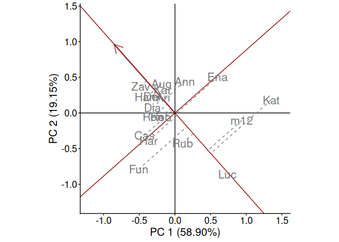

Statistical Tools for the Analysis of Multi Environment Agronomic Trials
Web: https://jangelini.github.io/geneticae/
CRAN: https://CRAN.R-project.org/package=geneticae/index.html
Understanding the relationship between crops performance and environment is a key problem for plant breeders and geneticists. In advanced stages of breeding programs, in which few genotypes are evaluated, multi-environmental trials (MET) are one of the most used experiments. Such studies test a number of genotypes in multiple environments in order to identify the superior genotypes according to their performance. In these experimentes, crop performance is modeled as a function of genotype (G), environment (E) and genotype-environment interaction (GEI). The presence of GEI generates differential genotypic responses in the different environments. Therefore appropriate statistical methods should be used to obtain an adequate GEI analysis, which is essential for plant breeders.
The average performance of genotypes through different environments can only be considered in the absence of GEI. However, GEI is almost always present and the comparison of the mean performance between genotypes is not enough. The most widely used methods to analyze MET data are based on regression models, analysis of variance (ANOVA) and multivariate techniques. In particular, two statistical models are widely used among plant breeders as they provide useful graphical tools for the study of GEI: the Additive Main effects and Multiplicative Interaction model (AMMI) and the Site Regression Model (SREG). However, these models are not always efficient enough to analyze MET data structure of plant breeding programs. They present serious limitations in the presence of atypical observations and missing values, which occur very frequently. To overcome this, several imputation alternatives (Angelini et al., 2024) and a robust AMMI and a SREG model were recently proposed in literature (Rodrigues et al., 2016; Angelini et al., 2022).
The geneticae package was created to gather in one place the most useful functions for this type of analysis and it also implements new methodology which can be found in recent literature. More importantly, geneticae is the first package to implement the robust AMMI models proposed by Rodrigues et al. (2016), the robusts SREG proposed by Angelini et al. (2022) and new imputation methods proposed by Angelini et al. (2024). In addition, there is no need to preprocess the data to use the geneticae package, as it the case of some previous packages which require a data frame or matrix containing genotype by environment means with the genotypes in rows and the environments in columns. In this package, data in long format is required. There is no restriction on columns names of genotypes, environments, repetitions (if any) and phenotypic traits of interest. Also, extra information that will not be used in the analysis may be present in the dataset. Finally, geneticae offers a wide variety of options to customize the biplots, which are part of the graphical output of these methods.
This package can be used through this Shiny app, making it available not only for R programmers.
Installation
You can install the released version of geneticae from CRAN with:
install.packages("geneticae")You can install the development version from our GitHub repo with:
# install.packages("devtools")
devtools::install_github("jangelini/geneticae")Shiny app
You can use geneticae through this Shiny app. Source code is in GitHub repo.
Getting Started
If you are just getting started with geneticae we recommend visiting the vignettes and exploring the examples throughout the package documentation.
Here we present a small example.
The dataset yan.winterwheat has information about the yield of 18 winter wheat varieties grown in nine environments in Ontario at 1993. The function GGEPlot() builds several GGE biplots views. The basic biplot is produced with the argument type="Biplot". If the function is used with the argument type = "Selected Environment" and the name of one environment is provided in selectedE, a line that passes through the environment marker (i.e. OA93), and the biplot origin is added. The most suitable cultivars for that particular environment can be identified looking at their projection onto this axis. Thus, at the environment OA93, the highest-yielding cultivar was Zav, and the lowest-yielding cultivar was Luc. The perpendicular line to the OA93 axis separates genotypes that yielded above and below the mean in this environment.
library(geneticae)
library(agridat)
data(yan.winterwheat)
GGE1 <- rSREGModel(yan.winterwheat, genotype = "gen", environment = "env",
response = "yield", model = "SREG")
rSREGPlot(GGE1, type = "Selected Environment", selectedE = "OA93", footnote = FALSE, titles = FALSE)
Figure: comparison of cultivar performance in a selected environment.